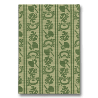

音羽屋をより深く知るための本
音羽屋をより深く知るための本 > 『梅と菊』
七代目尾上梅幸『梅と菊』
（日本経済新聞社 1979年）篤実な人柄が伝わってくる
昭和を代表する女方として、六代目中村歌右衛門と好敵手であった七代目梅幸の温厚な人柄が伝わってくる一冊です。
なかなか子供に恵まれなかった六代目菊五郎の養子として、生まれてすぐもらわれていった出生の話が前半の焦点です。五歳からはじまった稽古事、物心ついてから出生の秘密を知ってしまったが、両親に話せず悩んだ日のこと。「それでなくても引っ込み思案だった私はいっそう自閉的になり、何かというと自分の部屋に引きこもってばかりいた」としるしていますが、歌舞伎の名門の御曹司として育てられながらも、人間としての悩みをひとりかかえこんでいた梅幸の心情が伝わってきます。
父の六代目が亡くなってからは、集団指導体制になった菊五郎劇団の統率者としての立場をまっとうしていきますが、戦後の混乱のなかの苦労を描きつつも、それが愚痴にならず、自慢話にもなっていません。ただ、地道に舞台を中心に映画にも出演し、アメリカへも歌舞伎指導にいった人生の営みが淡々と書かれています。現地の俳優に、まず踊りをと考えて、女方には「藤娘」を立役には「松の緑」を教え、その上で歌舞伎十八番の「鳴神」の指導に入った挿話にも、梅幸の慎重な教え振りが伺えます。
また、「私の好きな役」と題された章では、『摂州合邦辻』の玉手御前をはじめ当たり役とした女方の役々をはじめ、『勧進帳』の義経や『春興鏡獅子』が解説されていますが、理に落ちず、舞台の上での実感が込められています。
最後の章では、「思い出の名優・先輩たち」として、六代目梅幸、六代目坂東彦三郎といった身内から、十五代目市村羽左衛門、初代中村吉右衛門、二代目市川左團次、七代目市川中車のような歴史のなかの名優との思い出話が、証言として残っているのも貴重です。
巻末には詳細な年譜がついています。
Copyright © Otowaya All Rights Reserved.